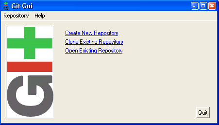

Introduction to Version Control with “git” and git for Paper Writing
Objective of the Presentation
- Version Control Systems
- Practical Git
- basic knowledge
- writing a latex paper
- Interrupt me when necessary!
Survey
- Who already knows Git?
- Who knows any of these?
- CVS, Subversion,
- Mercurial, Baz, GnuArch
Background
- Warning: not a Git guru
- My trajectory
- cp
- date
- tar
- “rameute.sh”
- (mail/diff)
- cvs, svn, GnuArch, bazaar
- git
Why Version Control, Why Git
- Version Control
- keeps track of history
- branching
- helps when merging
- Git
- distributed
- local repository
- fast
- Limitations
Outline
- Introduction ✓
- Starting with Git
- Schyzophrenic Git
- Multi-authoring
Let's try it
cp -r base mypaper ; cd mypaper
git init
git status
git add mypaper.tex cvpr.sty
git status
git commit
git status
... and more
Recap
git init
git add ...
git commit [-m ...]
Workinggit status
git add ...
git commit [-m ...]
Recap 2
- Clean projects: ignoring files
- .gitignore file(s)
- blabla.*, !blabla.my_precious, *~
- What did I just modify?
git status
git diff [...]
What happened?git log
Nota Bene (vs CVS, Subversion)
- Local commit
- commit everywhere (train, plane, here)
- merge with 0-stress
- ! backup
- By-project commit
- Need to “git add” modifications
GUI for Git
- Bundled with git: git gui
 - Many others (qgit, GitX, tortoisegit)
Customizing Git
git config --global user.name "John Doe"
git config --global user.email john@doe.com
Fancy colors and shortcutsgit config --global color.ui true
git config --global alias.st status
git config --global alias.ci commit
Configuration in ~/.gitconfigOutline
- Introduction ✓
- Starting with Git ✓
- Schyzophrenic Git
- Multi-authoring
About History
- Remember git log?
- Each commit is written in stone
- parent(s) commit
- modifications
- sha1sum (e.g. cb6dc3cb1f4f5eb15c1d9b2b25ae741cd73c0554)
- can be diff'ed against
git diff cb6dc3
- can be retreived
git checkout cb6dc3
Back to the Future: rewriting the past
- gitk, the “git gui” of history
- Let's go…
Recap
- Branch
- label for a commit
- automatically follows on commit
- Always commit before merging
- Use of “sha1” or branch-name (e.g. brrrr)
- Shortcuts
cb6dc3, brrrr, HEAD,
HEAD^, HEAD^^, HEAD^1, HEAD^42
cb6dc3^42, tagggg
Recap 2
git checkout sha1-or-branch-name
Creating a new branch at current positiongit checkout -b new-branch-name
Merging “brrrr” into “master”git checkout master
git merge brrrr
Recap 3
- Automatic git merge ⇒ automatic commit
- On conflicting git merge
- (partial merge)
- solve conflict
- git add
- git commit
- Exploring history
Outline
- Introduction ✓
- Starting with Git ✓
- Schyzophrenic Git ✓
- Multi-authoring
Distributed Version Control System
- Full local repository
- in-plane commit
- 0-stress merge
- Pull (fetch+merge)
git pull
- from any “remote”
git remote add john-repo ~john/…
git pull john-repo master
git pull john-repo experiment
Creating a Shared “Centralized” Repository
- Concepts
- “bare” repository (no classical files)
- “shared” access
- From scratch
git --bare init --shared=group
From an existing repositorygit clone --bare /home/john/repo/cvpr [...]
cd ....
git config core.sharedRepository group
Contributing to a Shared Repository
- Init: git clone ...
- Hack hack hack
- git commit hack git commit hack git commit
- Merge and solve conflicts: git pull
- Share: git push [origin master]
- (see also: git rebase)
Team Work
- Distributed or Centralized?
- Shared branches?
- Never break the “master”
- File formatting
- do not reformat sources (.tex, ...)
- 1 sentence = 1 line ?
- avoid double-spaces
Last Git Things
- Working Over the Network
- nfs
- ssh, http, “git”
- svn, cvs
- Reminder
- always commit before merge
- backup your repository (NAS ✓)
Outline
- Introduction ✓
- Starting with Git ✓
- Schyzophrenic Git ✓
- Multi-authoring ✓
- Next?
A git “Template” for Papers